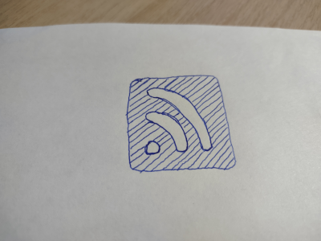

Rss Links are Here
After my last post about Rss generation being functional finally, this update to Markerator exposes links to the generated Rss in the generated webpages. I'm super excited for this feature, as I've recently given up on ALL news apps and websites, as they're simply just filled with clickbait headlines and AI generated garbage. By using Rss, the user has the ultimate control over what they read and see, and I want websites that make use of Markerator to allow their users the same level of control.

The help text of Markerator is updated to indicate how this feature is now used. I still owe Markerator a healthy does of documentation, but I feel like the help text is a fairly decent way to get started. My next plan for Markerator is to finally allow just more than one "Posts/Blog/News/Projects" page link in the header, and to include Rss generation for each section. I also plan to do some additional code clean up by separating out the Html generation bits. I already did this for Rss and Css, but the code will continue to improve.!